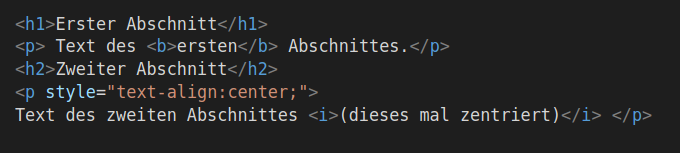

Im Quelltext muss beschrieben werden, wie die Seite, welche der Browser anzeigt, aussieht und was sie beinhaltet. HTML kennt verschiedene vordefinierte Elemente, diese werden mit Tags ausgezeichnet, wobei das, was dann zu diesem Element gehört, zwischen ein Anfangstag < ... > und ein Endtag </ ... > (an Stelle der drei Punkte wird der Name des Tags geschrieben) geschrieben wird.
| Anfangstag | Endtag | Element | |
|---|---|---|---|
| <p> | </p> | Abschnitt, wird immer auf einer neuen Zeile begonnen | |
| <h1> | </h1> | Überschrift (mit den Tags h2, h3, h4 ... werden immer kleinerwerdende Überschriften erstellt) | |
| <b> | </b> | fetter Text (engl. "bold") | |
| <i> | </i> | kursiver Text (engl. "italic") |
Tags können mit Attributen erweitert werden, welche das mit dem Tag ausgezeichnete Element näher spezifizieren. Die Attribute werden in den Anfangstag hineingeschrieben, das Endtag bleibt unverändert. Beispielsweise kann ein Abschnitts-Element mit einem Attribut so erweitert werden, dass der Abschnitt zentriert dargestellt wird: <p style="text-align:center;">
Der folgende Quellcode ergibt die untenstehende Ausgabe:
Erster Abschnitt
Text des ersten Abschnittes.
Zweiter Abschnitt
Text des zweiten Abschnittes (dieses mal zentriert)